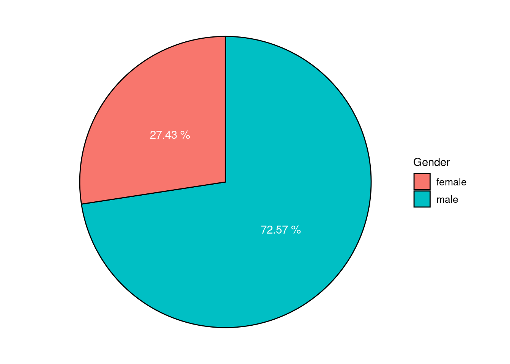
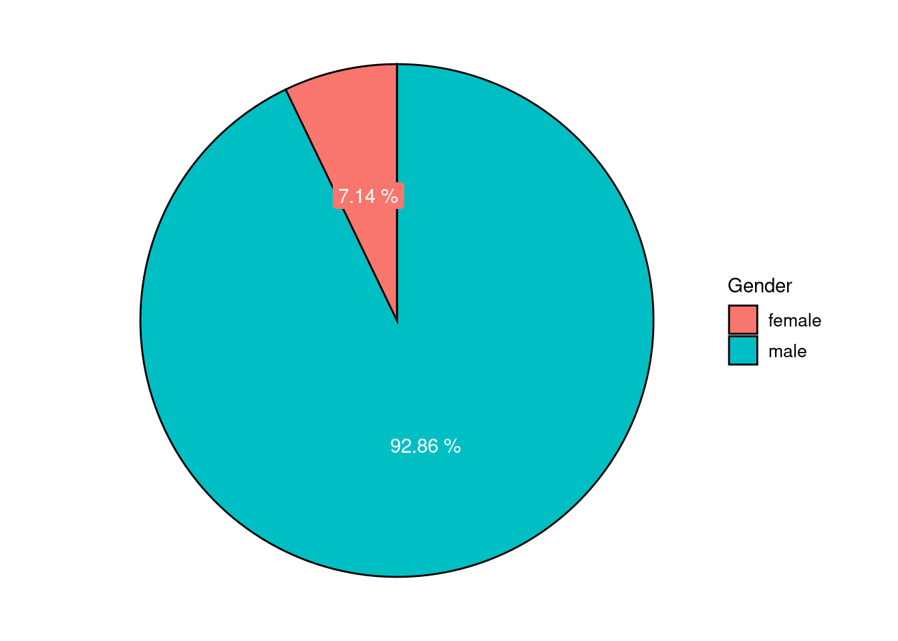

1 Introduction
In recent years, a notable political divide between young men and women has emerged across Western democracies. A much-cited Financial Times analysis from January 2024 reports that young women are becoming increasingly progressive, while young men are moving in a more conservative direction (Billmayer 2024). This pattern is not confined to Germany: cross-national studies confirm a growing gender gap in political attitudes and values (Hudde 2023; Langsæther and Knutsen 2025).
This gender divide is not just statistical—it is ideological. While many young women increasingly align with progressive values, a growing number of young men drift in the opposite direction, especially in perisphere regions such as Eastern Germany. They turn to conservative or anti-feminist narratives, shaped by online spaces like the manosphere and reinforced by the silent rules of the man box—the unwritten code that defines masculinity through emotional repression, dominance, and detachment.
This growing distance reflects more than political disagreement. It points to a deeper crisis: young men lack a positive, emotionally hones narrative of who they can be. In that vacuum, toxic masculinity thrives—not because men are inherently violent, but because vulnerability has been framed as weakness for far too long.
However, why tend young men to turn to conservative, and particularly anti-feminist attitudes and contexts? And what does it need to reverse this trend?
This essay argues that we need a new understanding of “toxic masculinity”—not as a moral indictment of men, but as a structural and emotional condition that harms men themselves. By rethinking masculinity and acknowledging the emotional damage caused by patriarchal norms, we can lay the groundwork for a more inclusive, liberating narrative of manhood. A narrative that empowers men to embrace feminism—not despite being men, but because they are.
2 Rethinking Toxic Masculinity
In public discourse, the concept of toxic masculinity is often primarily associated with the harm men inflict on others—especially women. This perspective is valid and important. It reflects the reality of gender-based violence, domination, and the social enforcement of patriarchal norms. However, this focus overlaps significantly with Raewyn Connell’s concept of hegemonic masculinity, which already provides a robust theoretical framework to explain the structural subordination of women.
In this essay, I propose a complementary understanding of toxic masculinity:
Toxic masculinity refers to internalized behaviors and belief systems that harm men themselves while enforcing heteronormative and patriarchal norms. These same patterns can—and often do—also harm others, especially women. But their primary function is to maintain the emotional, social, and psychological discipline of men within a patriarchal order.
This reframing shifts the emphasis: from seeing toxic masculinity as something men do to others toward understanding what patriarchal systems do to men themselves. In this view, toxic masculinity is not a judgment about “bad men,” but an analysis of damaging masculine norms that reproduce themselves across generations, even in th absence of overt violence or explicit domination.
It is crucial to underline: toxic masculinity is not an anti-male concept. On the contrary, it is a critical tool for understanding why many men suffer under the very system that appears to privilege them. It highlights emotional repression, social isolation, and the fear of vulnerability as symptoms of a wider system that restricts men’s full humanity.
3 The Everyday Reproduction of Toxic Masculinity
Toxic masculinity is not a choice—it is a form of socialization.1 Most men never actively chose to become emotionally repressed or disconnected from their needs. Instead, they were trained into these roles, often in subtle and systemic ways.
Surprisingly, this training does not necessarily come from the parents. Even in households where boys are raised with emotional awareness, non-violent communication, and sensitivity to gender roles, the world outside the home quickly counteracts these efforts. One boy in a classroom—carrying toxic patterns learned from home—can set a standard. If he mocks sensitivity or celebrates dominance, that behavior is likely to be perceived as “cool.”
Children spend a significant amount of their waking life in school. As they grow older, the influence of their parents diminishes, while peer dynamics become more dominant. Adapting to toxic norms becoms a survival strategy, not a conscious act. Boys do not choose to suppress emotions—they do so to protect themselves.
Let me illustrate this with two personal experiences:
When I was a young boy visiting my grandparents, I wore a dress. My grandfather, visibly irritated, said: “You don’t do that.“ No discussion, no explanation—just a judgment that cut deep. His discomfort with my choice marked a clear boundary of what was “acceptable“ for a boy.
Another time, during a football match, our team faced an unfair referee. Frustrated and overwhelmed, I signaled my coach—a man the age of my parents—to substitute me. I sat next to him, tears in my eyes. His only reaction: “Please, don’t start now this.” The message was clear: Emotions have no place here.
These moments are not exceptions—they are symptoms of a culture that trains boys to be “real men”: emotionless, invulnerable, self-suppressing. This is toxic, because boys long to be loved just like anyone else. But love requires vulnerability. And many boys learn early that making themselves vulnerable leads to pain, shame, or rejection.
Worse still, they are rarely taught how to handle that pain. They are told not to feel, not to cry, not to need—and so they bury it. This is the emotional core of toxic masculinity. Not cruelty, not power-lust, but loneliness and emotional illiteracy.
4 The Consequences: Mental Health, Violence, Disconnection
What are the consequences of toxic masculinity for men themselves? One of the most devastating is visible in mental health statistics: around 75% of all suicides in Germany are committed by men (Figure 1). This is despite the fact that, statistically, women are more likely to experience symptoms of depression. According to a meta-analysis by Salk et al. (2017, 27), this paradox may be due to gendered expectations that discourage men from recognizing or expressing psychological distress. Depression in men often goes unnoticed—by themselves and others—until it becomes fatal.
This silence is no coincidence. In a patriarchal culture, talking about feelings, needs, and vulnerability is often coded as unmanly. Emotional honesty conflicts with the man box norms of strength, stoicism, and self-control. The cost of being a “real man” is often one’s inner life. Toxic masculinity does not simply harm others—it isolates, represses, and destroys from within.
At the same time, men are also overrepresented on the other end of the spectrum: more than 90% of all prisoners in Germany are male (Figure 2). This reflects a different consequence of toxic masculinity: the pressure to act strong, dominant, and aggressive—especially when emotional expression is not an option. If vulnerability is forbidden, sometimes, violence becomes the last acceptable form of expression.

These two statistics—suicide and incarceration—represent two sides of the same coin: inward destruction and outward aggression. Both are rooted in the same toxic norms of masculinity. And both show that the patriarchy is not just a system that privileges men over others—it is a system that also devours them from within. Toxic masculinity does not make men powerful—it makes them silent, lonely, and dangerous. First to themselves, then to others.
5 Feminism as Liberation
Bearing this in mind, feminism is not a threat to men—it is an invitation. An invitation to free ourselves from rigid gender roles, destructive expectations, and the emotional repression demanded by patriarchy. It is not a war against men, but against a system that limits everyone.
As Mareike Fallwickl puts it, men need feminism to be liberated from these constraints—and feminism needs men because without them, the struggle against patriarchy has no chance (Fallwickl 2025). Feminism is for everyone.
What we need now is a culture of reconciliation, not accusation. We do not need a narrative of collective male guilt, but one of shared liberation. A new narrative where men are allowed—encouraged even—to be soft, to love, to doubt, to care, to take emotional and domestic responsibility.
Being a man should not mean losing oneself. It should mean being fully human.
6 Conclusion
Toxic masculinity is often misunderstood as an accusation—of men, by women. But it is better understood as a warning: a sign that something is deeply wrong with how our society defines manhood. Men are taught to be strong and emotionless—but this kind of education is harmful to everyone. We are all victims of this system.
This essay has argued for a reframing of toxic masculinity: not merely as a threat to others, but as a form of self-destruction in disguise. From emotional repression to untreated depression and high suicide rates, the damage is real—and it demands a collective response.
Feminism offers that response. It is not about blaming men, but about freeing them—from the narrow scripts of dominance and denial. It offers a new story: one where men are allowed to be fully human. To feel. To care. To grow.
If we want a better future—for everyone—we must stop telling boys to “man up” and start telling them better stories about what it means to be a man. Stories that say, simply: You are enough. Just as you are.
Made with Quarto.
References
Billmayer, Luisa. 2024. “Politischer Gender-Gap. Werden junge Frauen linker und Männer rechter? ZDFheute.” February 25, 2024. https://www.zdfheute.de/politik/deutschland/politischer-gender-gap-100.html.
Fallwickl, Mareike. 2025. Liebe Jorinde oder Warum wir einen neuen Feminismus des Miteinanders brauchen. München: Kjona.
Hudde, Ansgar. 2023. “Seven Decades of Gender Differences in German Voting Behavior.” Kölner Zeitschrift Für Soziologie Und Sozialpsychologie 75 (2): 143–70. https://doi.org/10.1007/s11577-023-00904-4.
Langsæther, Peter Egge, and Carl Henrik Knutsen. 2025. “Are Women More Progressive Than Men? Attitudinal Gender Gaps in West European Democracies.” International Political Science Review 46 (3): 442–53. https://doi.org/10.1177/01925121241280069.
Salk, Rachel H., Janet S. Hyde, and Lyn Y. Abramson. 2017. “Gender Differences in Depression in Representative National Samples: Meta-Analyses of Diagnoses and Symptoms.” Psychological Bulletin, April, 1–40. https://doi.org/10.1037/bul0000102.
Footnotes
I do not intend to excuse toxic behavior or deny personal responsibility. Quite the opposite: the older boys and men become, the more their responsibility for their actions increases. There is no excuse for toxic behavior—this essay seeks to understand, not to justify it.↩︎